Гибридная архитектура: лучшее из двух миров с Supabase и Spring Boot
Опубликовано 14 January 2026
Вместо того чтобы выбирать между простотой Supabase и мощью Spring Boot, почему бы не объединить их? Узнайте о гибридной архитектуре, которая использует лучшее от каждой технологии.
- toc
-
[]
- Ложная дилемма современной архитектуры
- Архитектурное видение
- Принципы проектирования
- Оркестрирование потоков
- Матрица принятия решений
- Примеры архитектуры по типу проекта
- Стратегия постепенной миграции
- Стоимость и операционные соображения
- Conclusion : Идеальное равновесие
- Чтобы пойти дальше
- Перспективы эволюции
- Архитектурные свидетельства
- Синтез: Современная архитектурная парадигма
- Финальное заключение
Ложная дилемма современной архитектуры
Когда мы создаём современное приложение со статическим фронтендом, мы часто сталкиваемся с бинарным выбором:
-
Ставь всё на решение Backend-as-a-Service(Supabase, Firebase) - простая, но ограниченная
-
Создать полностью готовый бэкенд(Spring Boot, Node.js) - мощный, но сложный
Это выбор — ложная дилемма. Гибридная архитектура предлагает третий путь: использовать каждую технологию там, где она преуспевает.
Архитектурное видение
Традиционная архитектура: монолитная
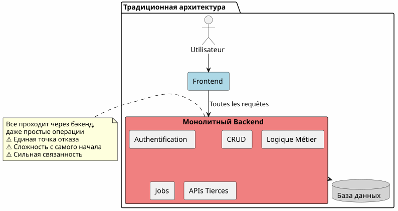
В этом подходе даже самые простые операции (чтение статьи, создание комментария) должны проходить через ваш бекенд. Вы платите за сложность уже с первого дня.
Архитектура BaaS: Все делегаты
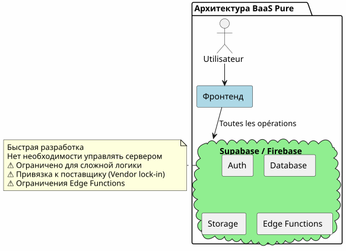
Напротив, делегировать всё в BaaS кажется привлекательным вначале, но быстро показывает свои ограничения, когда бизнес-логика усложняется.
Гибридная архитектура: разделение ответственности
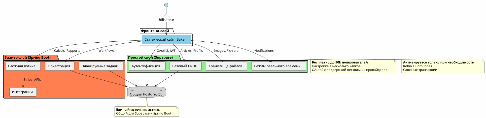
Гибридная архитектура четко разделяет ответственность в зависимости от сложности и характера операций.
Принципы проектирования
Принцип 1: Начать просто, развиваться умно
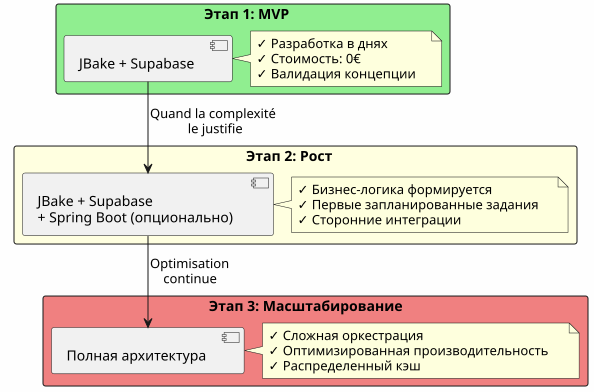
Не создавайте Spring Boot, если вам это не нужно.Начните работу с Supabase, добавьте Spring Boot, когда это оправдано сложностью.
Принцип 2: Разделение по характеру операции

Принцип 3: Единственный источник истины
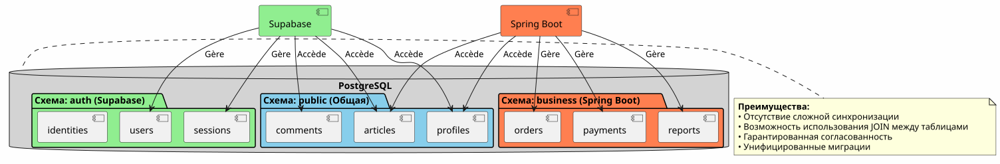
Разделяя один и тот же экземпляр PostgreSQL, Supabase и Spring Boot работают с одними и теми же данными без сложной синхронизации.
Оркестрирование потоков
Flux 1 : централизованная аутентификация
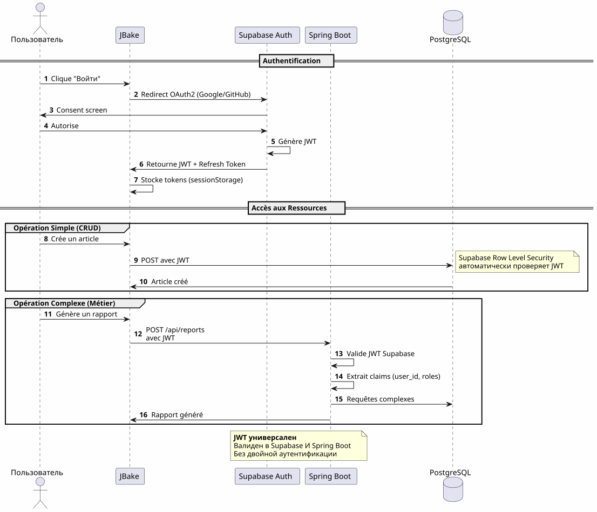
Ключевой пункт: Один процесс аутентификации, один JWT, пригодный для использования везде.
Поток 2: Оркестровка сложного бизнес-процесса
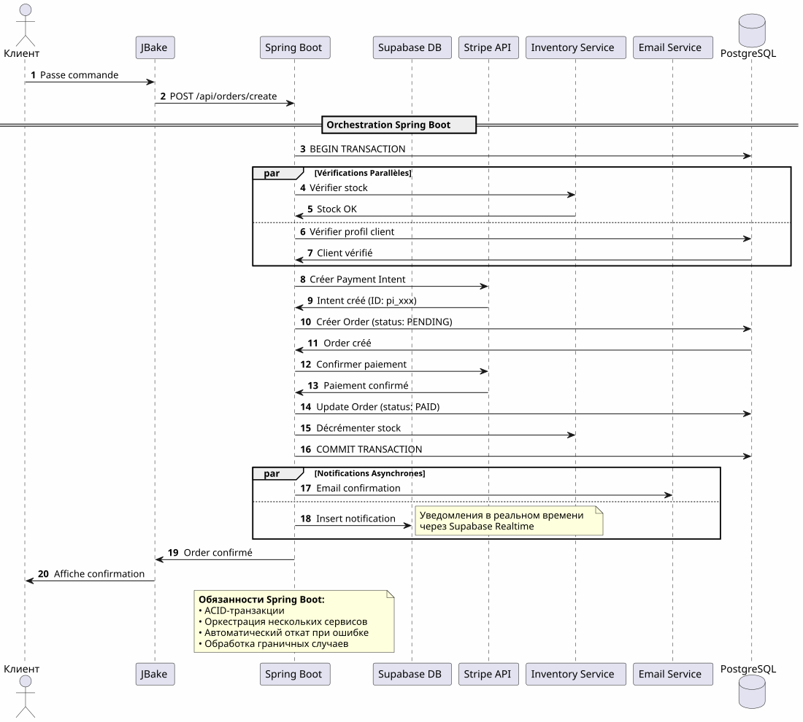
Что приносит Spring Boot: Надёжная оркестровка сложных процессов, вовлекающих несколько систем, с транзакционной гарантией.
Flux 3: Запланированные задачи и синхронизации
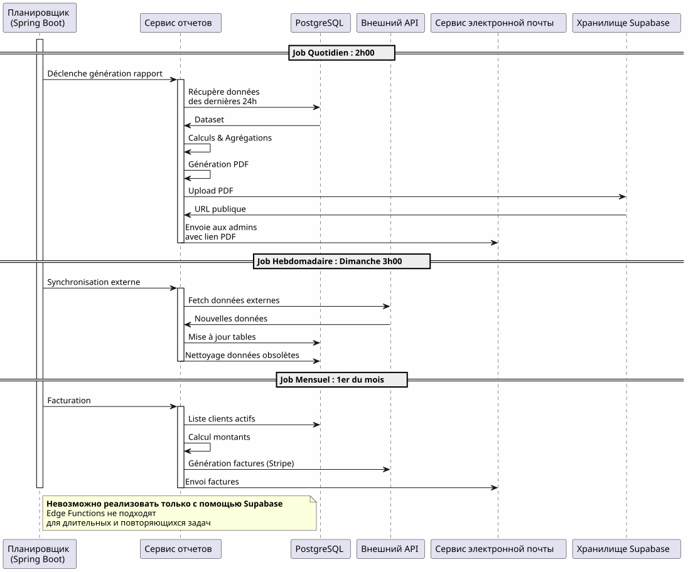
Что приносит Spring Boot: Надёжные запланированные задачи с управлением состоянием, автоматическим повтором и гарантированным выполнением.
Матрица принятия решений
Когда использовать Supabase?

Когда использовать Spring Boot?

Примеры архитектуры по типу проекта
Блог / Портфолио
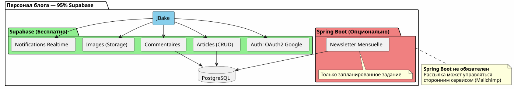
Вердикт: 100% Supabase более чем достаточно.
приложение SaaS

приговор: Необходима гибридная архитектура. Supabase для основного, Spring Boot для критической части (платежи, выставление счетов).
Электронная коммерция
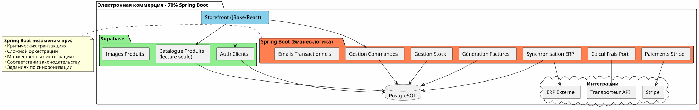
Вердикт: Spring Boot необходим. Supabase только для аутентификации и каталога.
Стратегия постепенной миграции
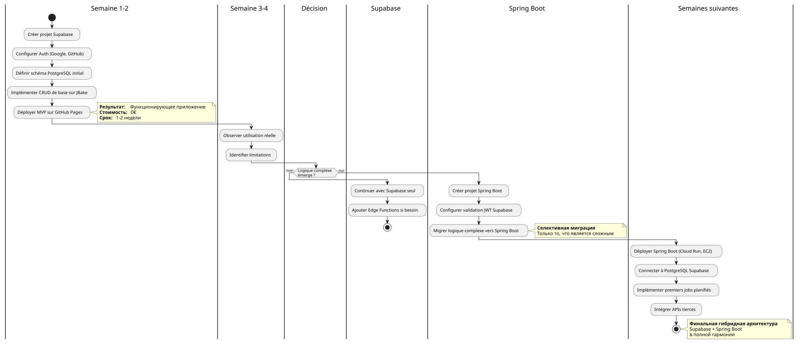
Стоимость и операционные соображения
Структура затрат
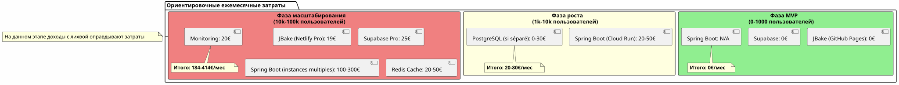
Операционные обязанности
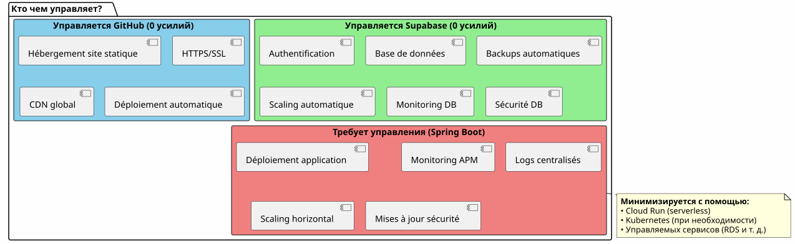
Conclusion : Идеальное равновесие
Гибридная архитектура Supabase + Spring Boot не является компромиссом, этосинергия.
Принципы, которые следует запомнить

Когда стоит выбрать эту архитектуру?
✅ Эта архитектура идеальна, если :
-
Вы хотите быстро начать (MVP за дни, а не за месяцы)
-
Вы ожидаете роста сложности бизнеса
-
Вы хотите минимизировать начальные расходы
-
Вы любите PostgreSQL и хотите единственный источник истины
-
Вы цените Kotlin и корутины для бизнес-кода
-
Вы хотите избежать полной привязки к поставщику
❌ Эта архитектура НЕ подходит если:
-
Ваш проект прост и останется простым (личный блог → 100% Supabase достаточно)
-
У вас уже есть сложившийся бэкенд-стек, которым вы владеете
-
Вы предпочитаете традиционный монолит
-
Вам нужен .NET, Python или другой язык для бекенда
Финальный обзор
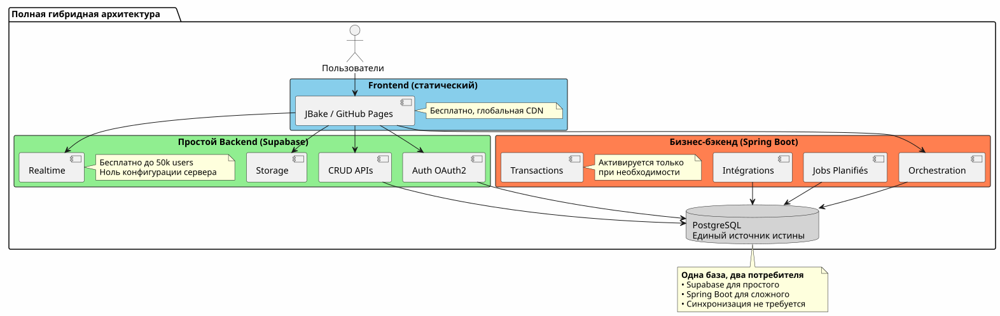
Лучшее из двух миров
Эта архитектура даёт вам:
🚀 Скорость Supabase
-
Запуск в часах, а не в неделях
-
Аутентификация OAuth2 за несколько кликов
-
Автоматически сгенерированные REST API
-
Нулевая конфигурация сервера
💪 Сила Spring Boot
-
Kotlin и Coroutines для элегантного асинхронного кода
-
Оркестрация сложных бизнес-процессов
-
Надёжные запланированные задания
-
Гарантированные транзакции ACID
-
Полная экосистема Spring
💰 Прогрессивная экономика
-
0€ для запуска и подтверждения
-
Затраты, следующие за ростом
-
Нет преждевременного переусложнения
🎯 Архитектурная гибкость
-
Постепенная миграция без рефакторинга
-
Добавление Spring Boot только при необходимости
-
Отсутствие полной привязки к поставщику
-
Эволюционная архитектура
Чтобы пойти дальше
Технические ресурсы
Документация Supabase :
Документация Spring Boot :
Дополнительные статьи :
-
Защита API с использованием JWT
-
Оптимизация производительности PostgreSQL
-
Шаблоны прогрессивной миграции
-
Управление ошибками в распределённой архитектуре
Реальные случаи использования
Эта гибридная архитектура успешно используется в:
-
SaaS B2BАутентификация Supabase, оплата Spring Boot
-
Маркетплейсы: Каталог Supabase, транзакции Spring Boot
-
Платформы контента: Статьи Supabase, аналитика Spring Boot
-
внутренние инструменты: CRUD Supabase, workflows Spring Boot
Чек‑лист запуска
Фаза 1 - Основания (Неделя 1)
-
Создать аккаунт Supabase - [ ] Настроить проект PostgreSQL - [ ] Включить аутентификацию (Google, GitHub) - [ ] Определить начальную схему - [ ] Настроить Row Level Security - [ ] Тестировать API из JBake
Phase 2 - MVP (Неделя 2-3)
-
Реализовать основные страницы - [ ] Интегрировать аутентификацию OAuth2 - [ ] Создать CRUD формы - [ ] Настроить хранилище для файлов - [ ] Развернуть на GitHub Pages - [ ] Тестировать в реальных условиях
Фаза 3 - Эволюция (Согласно потребностям)
-
Идентифицировать потребности сложной логики - [ ] Создать проект Spring Boot, если необходимо - [ ] Настроить валидацию JWT Supabase - [ ] Подключить к PostgreSQL Supabase - [ ] Мигрировать сложные функции - [ ] Внедрить запланированные задачи - [ ] Развернуть Spring Boot (Cloud Run, и т.д.)
Антипаттерны, которых следует избегать
❌ Не делать :
-
Дублировать данные между Supabase и Spring Boot
-
Создать две отдельные базы данных PostgreSQL
-
Реализовать аутентификацию самостоятельно
-
Использовать Spring Boot для простого CRUD
-
Переусложнять с самого начина
-
Игнорировать уровень безопасности строк Supabase
✅ Лучше сделать :
-
Разделять одну базу PostgreSQL
-
Пусть Supabase управляет аутентификацией
-
Использовать Spring Boot только для сложности
-
Начать просто, постепенно развиваться
-
Использовать сильные сторон каждой технологии
-
Защитить с помощью RLS на уровне базы данных
Перспективы эволюции
Добавление новых возможностей
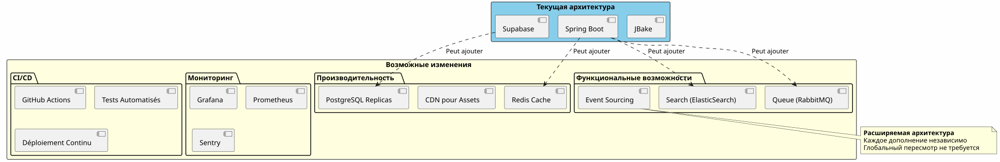
Горизонтальное масштабирование
Когда ваше приложение растет, гибридная архитектура естественно масштабируется :
Supabase :
-
Автоматически масштабируется до миллионов операций
-
Реплики чтения для производительности чтения
-
Восстановление по точке во времени для обеспечения безопасности
Spring Boot :
-
Множество экземпляров за балансировщиком нагрузки
-
Безсостоятельный дизайн облегчает горизонтальное масштабирование
-
Kubernetes для оркестрации при необходимости
PostgreSQL:
-
Разбиение для больших таблиц
-
Пул соединений (PgBouncer)
-
Sharding, если это действительно необходимо (редко)
Архитектурные свидетельства
Стартап SaaS (50k пользователей)
_ Мы начали с 100% Supabase. При 5 тыс. пользователей мы добавили Spring Boot только для выставления счетов Stripe и ежемесячных отчетов. Через год 80% наших операций по‑прежнему проходят через Supabase. Spring Boot управляет только критически важной частью. Такое разделение позволило нам масштабироваться без переработки. _
Платформа E-learning (10 тыс. пользователей)
</think> Аутентификация OAuth2 Supabase сэкономила нам три недели разработки. Автоматически сгенерированные API управляют всем нашим каталогом курсов. Spring Boot используется только для PDF-сертификатов и писем о прогрессе. Простая, поддерживаемая, масштабируемая архитектура. __
Маркетплейс B2B (3k пользователей)
_ Spring Boot управляет транзакциями между покупателями и продавцами (критично). Supabase управляет всем остальным: профили, обмен сообщениями в реальном времени, документы. То, что они используют одну и ту же базу PostgreSQL, избавляет нас от сложной синхронизации. Лучший архитектурный выбор, который мы сделали. _
Синтез: Современная архитектурная парадигма
Гибридная архитектура Supabase + Spring Boot представляет собой новый парадигма:архитектурная специализация.
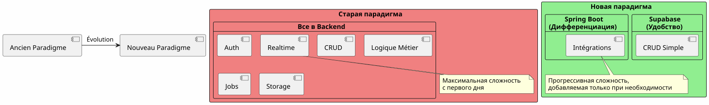
Основной принцип:Не стройте то, что уже существует в виде услуги. Сосредоточьтесь на том, что отличает ваше приложение.
Правило 80/20
В большинстве приложений:
-
80% операцийявляются стандартным CRUD → Supabase
-
20% операцийтребуют бизнес-логики → Spring Boot
Это естественное правило оправдывает гибридную архитектуру.
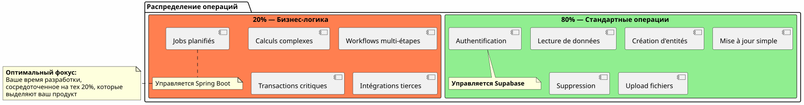
Финальное заключение
Гибридная архитектура не является техническим компромиссом, этостратегическое решение.
Она позволяет вам:
-
✅ Запустить быстро с рабочим MVP
-
✅ Подтвердите ваш рынок без больших вложений
-
✅ Развиваться постепенно, когда сложность этого требует
-
✅ Контролируйте свои расходы на каждом этапе
-
Использовать лучшее из каждой технологии
-
✅ Избегать преждевременного перепроектирования
-
✅ Сохранить гибкость на будущее
Она представляет:
-
ПрагматизмКаждая технология, в которой она преуспевает
-
🚀Скорость: Минимальное время вывода на рынок
-
💰ЭкономикаЗатраты, соответствующие стоимости
-
🔮масштабируемость: Архитектура, которая растёт вместе с вами
-
🛡️надёжность: Проверенные и надежные услуги
Ваш следующий шаг
Если эта архитектура вам близка, вот с чего начать:
-
Создайте аккаунт Supabase(бесплатно)
-
Определите свою минимальную схему данных
-
Настройте аутентификацию OAuth2
-
Создайте свою первую страницу JBake, которая использует API
-
Разверните на GitHub Pages
Вы получите рабочий MVP занесколько дней.
Spring Boot придёт естественно, когда вам это понадобится. Не раньше.
Гибридная архитектура — это искусство строить именно то, что нужно, когда это нужно.
Hорошего развития! 🚀
Поделитесь этой статьёй, если считаете, что она может помочь другим разработчикам сделать правильные архитектурные решения.